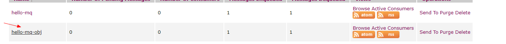

本篇主要内容：
1.ActiveMQ术语及API介绍
2.ActiveMQ 文本消息处理
3.ActiveMQ 对象消息处理
即使觉得枯燥，我们也要大致看一眼，过后相信你还会再来看的！因为很有用
1 Destination
目的地，JMS Provider（消息中间件）负责维护，用于对 Message 进行管理的对象。
MessageProducer 需要指定 Destination 才能发送消息，MessageReceiver 需要指定 Destination
才能接收消息。
2 Producer
消息生成者，负责发送 Message 到目的地。
3 Consumer | Receiver
消息消费者，负责从目的地中消费【处理|监听|订阅】Message。
4 Message
消息，消息封装一次通信的内容。
下述API都是接口类型，由定义在javax.jms包中
都是JMS（Java Message Service）标准接口定义
1.ConnectionFactory
链接工厂，用于创建链接的工厂类型
2.Connection
链接，用于建立访问ActiveMQ连接的类型，由链接工厂ConnectionFactory创建
3.Session
会话，一次持久有效有状态的访问，由链接创建
4.Destination & Queue
目的地。用于描述本次访问ActiveMQ的消息访问目的地，即ActiveMQ服务中的具体队列，由会话创建
interface Queue extends Destination
5.MessageProducer
消息生成者、在一次有效会话中，用于发送消息给ActiveMQ服务的工具，由会话创建
6.MessageConsumer
消息消费者【消息订阅者|消息处理着】，在一次有效会话中，用于从ActiveMQ服务中获取消息的工具，由会话创建
7.Message
消息。通过消息生成者向ActiveMQ服务发送消息时使用的数据载体对象或消费者从ActiveMQ服务中获取消息时使用的数据载体对象。是所有消息【文本消息|对象消息等】具体类型的顶级接口，可以通过会话创建或通过会话从ActiveMQ服务中获取
注：*本案例将以producer（消息生产者）和consumer（消息发送者）两个模块为例
准备工作：
确保你的ActiveMQ已经开启，并且所依赖的端口已经关闭（建议直接关闭防火墙 service iptables stop）
Maven环境
1.1创建模块
1,2在POM文件添加ActiveMQ的依赖（根据个人的ActiveMQ版本自行查找）
<dependencies> <dependency> <groupId>org.apache.activemq</groupId> <artifactId>activemq-all</artifactId> <version>5.9.0</version> </dependency> </dependencies>
1.3 编写消息的生产者
package cn.arebirth.mq; import org.apache.activemq.ActiveMQConnectionFactory; import javax.jms.*; public class ActiveMQTextProducer { public void sendTextActiveMQ(String msg) { //定义链接工厂 ConnectionFactory connectionFactory = null; //定义链接对象 Connection connection = null; //定义会话 Session session = null; //目的地 Destination destination = null; //定义消息的发送者 MessageProducer producer = null; //定义消息 Message message = null; try { /** * userName:访问ActiveMQ服务的用户名，默认为admin。 * password：访问ActiveMQ服务的密码，默认为admin * 用户名和用户密码都可以通过ActiveMQ安装目录的oonf目录下的jetty-ream.properties文件进行修改 * * borkerURL：访问ActiveMQ服务的路径地址。 * 路径结构为：协议名://主机地址:端口号 * 在conf/activemq.xml文件中可以找到修改 * 在上一篇文章中都有介绍 */ connectionFactory = new ActiveMQConnectionFactory("admin", "admin", "tcp://169.254.18.20:61616"); //创建链接对象 connection = connectionFactory.createConnection(); //启动连接 connection.start(); /** * 参数一：transacted 是否使用事务 可选值为:true|false * ture:使用事务 设置第二个参数变量这为 Session.SESSION_TRANSACTION 交由session管理 * false:不使用事务，则设置我们的参数即可 * * acknowledgeMode: * * Session.AUTO_ACKNOWLEDGE:自动消息确认机制 * * Session.CLIENT_ACKNOWLEDGE:客户端确认机制 * * Session.DUPS_OK_ACKNOWLEDGE:有副本的客户端确认消息机制 这里设置 这两个参数的含义为： 不使用事务，并由Session自动确认提交 * 这里对此不作过多讲解，初学者跟着敲，其后在慢慢了解原理 * */ session = connection.createSession(false, Session.AUTO_ACKNOWLEDGE); //创建目的地，目的地名称即队列的名称，也就是保存我们消息地方的名称。消息的消费者需要通过此名称访问对应的队列 //名称不固定 destination = session.createQueue("hello-mq"); //创建消息的生产者 需要指定目的地（也就是把Destination传入参数） producer = session.createProducer(destination); //创建消息对象 并传入我们需要放入队列的消息 message = session.createTextMessage(msg); //发送消息 producer.send(message); } catch (Exception e) { e.printStackTrace(); } finally { //回收消息发送者资源 if (producer != null) { try { producer.close(); } catch (JMSException e) { e.printStackTrace(); } } if (session != null) { try { session.close(); } catch (JMSException e) { e.printStackTrace(); } } if (connection != null) { try { connection.close(); } catch (JMSException e) { e.printStackTrace(); } } } } }
2.1创建模块
2,2在POM文件添加ActiveMQ的依赖（根据个人的ActiveMQ版本自行查找）
<dependency> <groupId>org.apache.activemq</groupId> <artifactId>activemq-all</artifactId> <version>5.9.0</version> </dependency>
2.3编写消息的消费者
package cn.arebirth.mq; import org.apache.activemq.ActiveMQConnectionFactory; import javax.jms.*; public class ActiveMQTextConsumer { public void receiveTextActiveMQ() { //定义链接工厂 ConnectionFactory connectionFactory = null; //定义链接对象 Connection connection = null; //定义会话 Session session = null; //目的地 Destination destination = null; //定义消息的消费者（接收者） MessageConsumer consumer = null; //定义消息 Message message = null; try { /** * userName:访问ActiveMQ服务的用户名，默认为admin。 * password：访问ActiveMQ服务的密码，默认为admin * 用户名和用户密码都可以通过ActiveMQ安装目录的oonf目录下的jetty-ream.properties文件进行修改 * * borkerURL：访问ActiveMQ服务的路径地址。 * 路径结构为：协议名://主机地址:端口号 * 在conf/activemq.xml文件中可以找到修改 * 在上一篇文章中都有介绍 */ connectionFactory = new ActiveMQConnectionFactory("admin", "admin", "tcp://169.254.18.20:61616"); //创建链接对象 connection = connectionFactory.createConnection(); //启动连接 connection.start(); /** * 参数一：transacted 是否使用事务 可选值为:true|false * ture:使用事务 设置第二个参数变量这为 Session.SESSION_TRANSACTION 交由session管理 * false:不使用事务，则设置我们的参数即可 * * acknowledgeMode: * * Session.AUTO_ACKNOWLEDGE:自动消息确认机制 * * Session.CLIENT_ACKNOWLEDGE:客户端确认机制 * * Session.DUPS_OK_ACKNOWLEDGE:有副本的客户端确认消息机制 这里设置 这两个参数的含义为： 不使用事务，并由Session自动确认提交 * 这里对此不作过多讲解，初学者跟着敲，其后在慢慢了解原理 * */ session = connection.createSession(false, Session.AUTO_ACKNOWLEDGE); //创建目的地，目的地名称即队列的名称，也就是保存我们消息地方的名称。消息的消费者需要通过此名称访问对应的队列 //名称不固定 destination = session.createQueue("hello-mq"); //创建消息的消费者 需要指定目的地（也就是把Destination传入参数） consumer = session.createConsumer(destination); //创建消息对象 由消费者接收消息 message = consumer.receive(); //处理消息 String msg = ((TextMessage) message).getText(); System.out.println("ActiveMQ say:" + msg); } catch (Exception e) { e.printStackTrace(); } finally { //回收消息接收者资源 if (consumer != null) { try { consumer.close(); } catch (JMSException e) { e.printStackTrace(); } } if (session != null) { try { session.close(); } catch (JMSException e) { e.printStackTrace(); } } if (connection != null) { try { connection.close(); } catch (JMSException e) { e.printStackTrace(); } } } } }
定义测试类，来测试我们的成果！
3.1 定义producer测试类
package cn.arebirth.mq; public class ProducerTest { public static void main(String[] args) { ActiveMQTextProducer producer = new ActiveMQTextProducer(); producer.sendTextActiveMQ("Hello,ActiveMQ!"); } }当我们执行完这段代码后，我们打开我们的ActiveMQ的控制面板（首先你要启动你的ActiveMQ，上一篇有介绍到！）
接下来，当我们看到此图片内容即说明producer成果运行！（hello-mq我们自定义的队列名称！）
3.2 定义 Consumer测试类
package cn.arebirth.mq; public class ConsumerTest { public static void main(String[] args) { ActiveMQTextConsumer consumer = new ActiveMQTextConsumer(); consumer.receiveTextActiveMQ(); } }
运行结果出现如下内容即成果！
当我们仔细观察ActiveMQ控制台的时候会发现，
producer每产生一条消息对应的Number Of Pending Message和Message Enqueued就+1
consumer每次启动消费消息的时候，Number Of pending Message就会-1 Message Dequeued +1
为什么呢？哈哈 相信大家已经大概猜出来了或者看英文的意思
介绍下：
鼓捣完文本消息，那么有的人会说，只能鼓捣文本？？错了，接下来我们搞实用的对象！（不是你和我，是我们和电脑 -. -）
有了上面处理文本消息的基础，我们将很容易掌握处理对象消息的能力！这里面的步骤，我们将略省一部分，和上面及其相似
package cn.arebirth.pojo;
import java.io.Serializable;
/**
* 一定要序列化！！
*/
public class User implements Serializable {
private String username;
private String pwd;
private String content;
@Override
public String toString() {
return "User{" +
"username='" + username + '\'' +
", pwd='" + pwd + '\'' +
", content='" + content + '\'' +
'}';
}
public User() {
}
public User(String username, String pwd, String content) {
this.username = username;
this.pwd = pwd;
this.content = content;
}
public String getUsername() {
return username;
}
public void setUsername(String username) {
this.username = username;
}
public String getPwd() {
return pwd;
}
public void setPwd(String pwd) {
this.pwd = pwd;
}
public String getContent() {
return content;
}
public void setContent(String content) {
this.content = content;
}
}
2.1 还是需要pom的jar包依赖的的，如果还在原来的环境上，则不需要添加啦！
<dependency> <groupId>org.apache.activemq</groupId> <artifactId>activemq-all</artifactId> <version>5.9.0</version> </dependency>
2.2 编写消息的生产者
package cn.arebirth.mq; import cn.arebirth.pojo.User; import org.apache.activemq.ActiveMQConnectionFactory; import javax.jms.*; public class ActiveMQObjectProducer { public void sendObjectActiveMQ(User user){ //定义链接工厂 ConnectionFactory connectionFactory = null; //定义链接对象 Connection connection = null; //定义会话 Session session = null; //目的地 Destination destination = null; //定义消息的发送者 MessageProducer producer = null; //定义消息 Message message = null; try { /** * userName:访问ActiveMQ服务的用户名，默认为admin。 * password：访问ActiveMQ服务的密码，默认为admin * 用户名和用户密码都可以通过ActiveMQ安装目录的oonf目录下的jetty-ream.properties文件进行修改 * * borkerURL：访问ActiveMQ服务的路径地址。 * 路径结构为：协议名://主机地址:端口号 * 在conf/activemq.xml文件中可以找到修改 * 在上一篇文章中都有介绍 */ connectionFactory = new ActiveMQConnectionFactory("admin", "admin", "tcp://169.254.18.20:61616"); //创建链接对象 connection = connectionFactory.createConnection(); //启动连接 connection.start(); /** * 参数一：transacted 是否使用事务 可选值为:true|false * ture:使用事务 设置第二个参数变量这为 Session.SESSION_TRANSACTION 交由session管理 * false:不使用事务，则设置我们的参数即可 * * acknowledgeMode: * * Session.AUTO_ACKNOWLEDGE:自动消息确认机制 * * Session.CLIENT_ACKNOWLEDGE:客户端确认机制 * * Session.DUPS_OK_ACKNOWLEDGE:有副本的客户端确认消息机制 这里设置 这两个参数的含义为： 不使用事务，并由Session自动确认提交 * 这里对此不作过多讲解，初学者跟着敲，其后在慢慢了解原理 * */ session = connection.createSession(false, Session.AUTO_ACKNOWLEDGE); //创建目的地，目的地名称即队列的名称，也就是保存我们消息地方的名称。消息的消费者需要通过此名称访问对应的队列 //名称不固定 destination = session.createQueue("hello-mq-obj"); //创建消息的生产者 需要指定目的地（也就是把Destination传入参数） producer = session.createProducer(destination); //创建消息对象 并传入我们需要放入队列的消息 message = session.createObjectMessage(user); //发送消息 producer.send(message); } catch (Exception e) { e.printStackTrace(); } finally { //回收消息发送者资源 if (producer != null) { try { producer.close(); } catch (JMSException e) { e.printStackTrace(); } } if (session != null) { try { session.close(); } catch (JMSException e) { e.printStackTrace(); } } if (connection != null) { try { connection.close(); } catch (JMSException e) { e.printStackTrace(); } } } } }
3.1 还是需要pom的jar包依赖的的，如果还在原来的环境上，则不需要添加啦！
<dependency> <groupId>org.apache.activemq</groupId> <artifactId>activemq-all</artifactId> <version>5.9.0</version> </dependency>
3.2 编写消息的消费者
package cn.arebirth.mq; import cn.arebirth.pojo.User; import org.apache.activemq.ActiveMQConnectionFactory; import javax.jms.*; public class ActiveMQObjectConsumer { public void receiveObjectActiveMQ() { //定义链接工厂 ConnectionFactory connectionFactory = null; //定义链接对象 Connection connection = null; //定义会话 Session session = null; //目的地 Destination destination = null; //定义消息的消费者（接收者） MessageConsumer consumer = null; //定义消息 Message message = null; try { /** * userName:访问ActiveMQ服务的用户名，默认为admin。 * password：访问ActiveMQ服务的密码，默认为admin * 用户名和用户密码都可以通过ActiveMQ安装目录的oonf目录下的jetty-ream.properties文件进行修改 * * borkerURL：访问ActiveMQ服务的路径地址。 * 路径结构为：协议名://主机地址:端口号 * 在conf/activemq.xml文件中可以找到修改 * 在上一篇文章中都有介绍 */ connectionFactory = new ActiveMQConnectionFactory("admin", "admin", "tcp://169.254.18.20:61616"); //创建链接对象 connection = connectionFactory.createConnection(); //启动连接 connection.start(); /** * 参数一：transacted 是否使用事务 可选值为:true|false * ture:使用事务 设置第二个参数变量这为 Session.SESSION_TRANSACTION 交由session管理 * false:不使用事务，则设置我们的参数即可 * * acknowledgeMode: * * Session.AUTO_ACKNOWLEDGE:自动消息确认机制 * * Session.CLIENT_ACKNOWLEDGE:客户端确认机制 * * Session.DUPS_OK_ACKNOWLEDGE:有副本的客户端确认消息机制 这里设置 这两个参数的含义为： 不使用事务，并由Session自动确认提交 * 这里对此不作过多讲解，初学者跟着敲，其后在慢慢了解原理 * */ session = connection.createSession(false, Session.AUTO_ACKNOWLEDGE); //创建目的地，目的地名称即队列的名称，也就是保存我们消息地方的名称。消息的消费者需要通过此名称访问对应的队列 //名称不固定 destination = session.createQueue("hello-mq-obj"); //创建消息的消费者 需要指定目的地（也就是把Destination传入参数） consumer = session.createConsumer(destination); //创建消息对象 由消费者接收消息 message = consumer.receive(); //处理消息 ObjectMessage objectMessage = (ObjectMessage) message; User user = (User) objectMessage.getObject(); System.out.println("ActiveMQ say:" + user); } catch (Exception e) { e.printStackTrace(); } finally { //回收消息接收者资源 if (consumer != null) { try { consumer.close(); } catch (JMSException e) { e.printStackTrace(); } } if (session != null) { try { session.close(); } catch (JMSException e) { e.printStackTrace(); } } if (connection != null) { try { connection.close(); } catch (JMSException e) { e.printStackTrace(); } } } } }
4.1 Produce生产者测试代码
package cn.arebirth.mq; import cn.arebirth.pojo.User; public class ProducerTest { public static void main(String[] args) { ActiveMQObjectProducer producer = new ActiveMQObjectProducer(); producer.sendObjectActiveMQ(new User("Arebirth","123","Hello,ActiveMQ!")); } }
当我们执行完这段代码后，我们打开我们的ActiveMQ的控制面板（首先你要启动你的ActiveMQ，上一篇有介绍到！）
会看到 队列中增加了我们的消息！
4.2 Consumer消费者测试代码
package cn.arebirth.mq; public class ConsumerTest { public static void main(String[] args) { ActiveMQObjectConsumer consumer = new ActiveMQObjectConsumer(); consumer.receiveObjectActiveMQ(); } }当我们执行后，出现下面的内容即可！成功啦！
在看下，控制面板，

是不是已经和上一个列子一样啦！
ps
本篇内容就到这里了，希望各位勤加敲代码，毕竟代码不是看出来的~